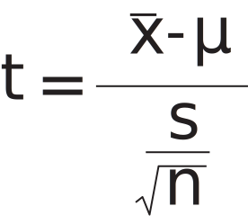

<!DOCTYPE html>
<html lang="en"></html>
<head>
    <script src='https://d3js.org/d3.v4.min.js'></script>
    <meta charset="UTF-8">
    <meta name="viewport" content="width=device-width, initial-scale=1.0">
    <link rel="stylesheet" href="one-sample-t.css">
    <link rel="stylesheet" href="playground.css">
    <link rel="stylesheet" href="../common.css">
    <link rel="stylesheet" href="paginate.css">
    <link rel="stylesheet" href="../../main.css">
    <link rel="preconnect" href="https://fonts.googleapis.com">
<link rel="preconnect" href="https://fonts.gstatic.com" crossorigin>
<link href="https://fonts.googleapis.com/css2?family=Montserrat:ital,wght@0,100..900;1,100..900&display=swap" rel="stylesheet">
</head>
<body>
    <div id="nav-home">
        <a href="../index.html"></a>
    </div>
    <div class="page-container">
        <div class="page-buttons">
            <button id="prev"><i class="arrow left"></i></button>
            <button id="next"><i class="arrow right"></i></button>
        </div>
        <div class="replay">
            <button id="replay-button"></button>
        </div>
        <h1>One-Sample T-Test</h1>
        <div class="tab-sections">
            <button id="tab-lesson">LESSON</button>
            <button id="tab-playground">PLAYGROUND</button>
        </div>
        <div id="lesson">
            <div id="page1">
                <div class="assumptions">
                    <p>Use case: N&le;30</p>
                </div>
                <p>The Kansas Farm Bureau claims that cows produce an average of 6.3 gallons of milk every day. You want to check this claim, but you only find a random sample of <b>15 cows</b> to measure yourself:</p>
                <div id="sample"></div>
                <p>Our sample of cows produced 7 gallons of milk on average. This is higher than 6.3 gallons as claimed by the Kansas Farm Bureau.</p>
                <p>If the Farm Bureau is right, what is the probability of seeing our sample average of 7 gallons just by chance?</p>
            </div>
            <div id="page2">
                <p>Since we have a sample size &lt;30, we cannot directly estimate the standard error of the population.</p>
                <p>To calculate how likely it is to have seen our sample mean, we select the student t distribution corresponding to our <b>degrees of freedom</b>: n - 1 = <b>14</b>.</p>
                <div id="t-distributions"><input type="range" id="t-slider" min="-6" max="6" step="0.1" value="6"><div id="t-value"></div></div>
                <p>Click and drag the <b>t-score</b> slider to see how the p-value changes depending on the t-score.</p>
            </div>
            <div id="page3">
                <p>To compare our sample mean to the selected t-distribution, we need to compute the sample t-score:</p>
                <div id="t-score-formula"></div>
            </div>
            <div id="page4">
                <div id="t-score-computation">
                    <div id="t-score-formula-2"></div>
                    <div id="t-score-compute"></div>
                </div>
                <p>To compute the t-score, we just need calculate one more input: the sample standard deviation.</p>
                <div id="variance"></div>
            </div>
            <div id="page5">
                <p>With our t-score, we can plot the probabilities of seeing any given sample mean under the null hypothesis h<sub>0</sub> that the true population mean μ = 6.3:</p>
                <div id="tail-switch">
                    <button id="one-tail-button">ONE-TAIL</button><button id="two-tail-button">TWO-TAIL</button>
                </div>
                <div id="null-distribution"></div>
                <p id="conclusion"></p>
            </div>
        </div>
        <div id="playground">
            <div class="graph" id="sample-graph-pg">
                <h3>Sample</h3>
                <div id="sample-pg">
                    <div id="sliders">
                        <div class="slider-container" id="select-sample-size">
                            <div class="slider-symbol" id="sample-size-slider-symbol">n</div>
                            <input type="range" class="slider" id="sample-size-slider" min="1" max="29" step="1">
                            <span id="sample-size-value"></span>
                        </div>
                        <div class="slider-container" id="select-sd">
                            <div class="slider-symbol" id="sd-slider-symbol">sd</div>
                            <input type="range" class="slider" id="sd-slider" min="0" max="3" step="0.01">
                            <span id="sd-value"></span>
                        </div>
                    </div>
                    <input type="range" id="mean-slider" min="0" max="10" step="0.01"><div id="mean-slider-value"></div>
                </div>
            </div>
            <br>
            <div id="tail-switch-pg">
                <button id="one-tail-button-pg">ONE-TAIL</button><button id="two-tail-button-pg">TWO-TAIL</button>
            </div>
            <div id="sliders">
                <div class="slider-container" id="select-h0">
                    <div class="slider-symbol" id="h0-slider-symbol">h<sub>0</sub></div>
                    <input type="range" class="slider" id="h0-slider" min="0" max="10" step="0.01">
                    <span id="h0-value"></span>
                </div>
                <div class="slider-container" id="select-alpha">
                    <div class="slider-symbol" id="alpha-slider-symbol">α</div>
                    <input type="range" class="slider" id="alpha-slider" min="0.001" max="0.15" step="0.001">
                    <span id="alpha-value"></span>
                </div>
            </div>
            <div id="t-distr-container">
                <div id="t-distribution" class="graph">
                    <div id="df-display"></div><div id="df-formula">n-1</div>
                </div>
                <div id="t-score-container">
                    
                    <div id="t-score-display"></div>
                </div>
            </div>
        </div>
    </div>
    <script src="one-sample-t.js" type="module"></script>
    <script src="one-sample-t-playground.js" type="module"></script>
    <script src="paginate.js" type="module"></script>
</body>